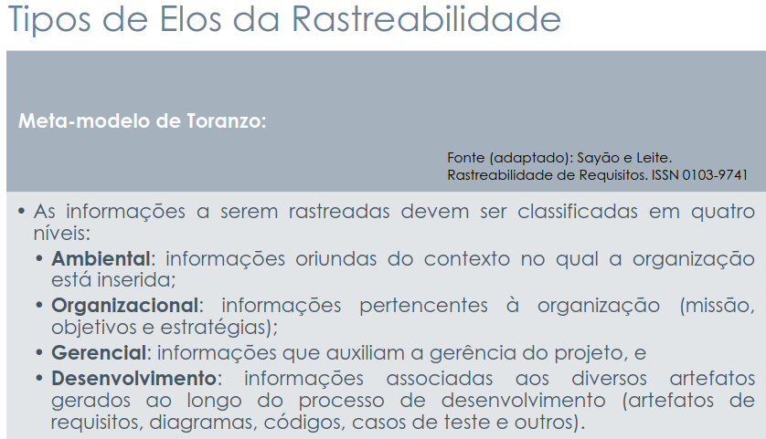

Forward-From
Introdução
A rastreabilidade Forward-From (ou rastreabilidade para frente) é uma abordagem que permite acompanhar o destino de cada requisito ao longo do desenvolvimento do projeto. Ela responde à pergunta “o que acontece com este requisito?”, mostrando como ele é transformado em artefatos de design, código, testes e documentação.
Em outras palavras, a rastreabilidade Forward-From garante que cada requisito seja devidamente implementado e testado, permitindo verificar se todas as necessidades levantadas foram atendidas e facilitando o controle de progresso e validação do sistema.
Integrantes do Grupo
A Tabela 1 apresenta todos os integrantes da equipe que participaram da etapa da Histórias de Usuário, juntamente com a descrição das atividades que cada um desenvolveu durante o projeto.
| Nome | Quais etapas participou |
|---|---|
| Arthur Guilherme | Adição dos Forward-From: FF43, FF44, FF45, FF46, FF49, FF50, FF51, FF59 e FF64 |
| Arthur Henrique | Adição dos Forward-From: FF03, FF04, FF05, FF16, FF20, FF25, FF26, FF29, FF58 e FF63 |
| Felipe Guimaraes | Adição dos Forward-From: FF07, FF08, FF09, FF10, FF12, FF17 e FF27 |
| João Felipe | Adição dos forward-from: FF14, FF23, FF30, FF37, FF41, FF42, FF47, FF53 e FF55. |
| João Sapiência | Adição dos Forward-From: FF24, FF31, FF32, FF33, FF36, FF39, FF48, FF57, FF58, FF63 e FF66 |
| Tiago Lemes | Criação do documento de Forward-From e adição dos Forward-From: FF06, FF15, FF18, FF19, FF21, FF22, FF34, FF35, FF52 e FF56 |
| Vilmar José | Adição dos Forward-From: FF01, FF02, FF11, FF13, FF28, FF38, FF40, FF60, FF61, FF65. |
Metodologia
A metodologia adotada para esta análise baseia-se no Meta-modelo de Toranzo, conforme apresentado nos slides da aula “Requisitos – Aula 26”, de Milene Serrano e Maurício Serrano, disponíveis clicando aqui.
Esse modelo organiza as informações rastreáveis em níveis hierárquicos e define elos que representam as relações entre os artefatos envolvidos no desenvolvimento de sistemas.
Níveis de Informação
Nesta análise, o foco está no nível de Desenvolvimento, um dos quatro níveis principais do modelo, conforme apresentado na Figura 1:
- Ambiental
- Organizacional
- Gerencial
- Desenvolvimento

No contexto da rastreabilidade Forward-From, o objetivo é conectar os requisitos documentados aos artefatos de design e implementação, permitindo rastrear como os requisitos são transformados em componentes técnicos.
Elos de Rastreabilidade
Para modelar as conexões entre os requisitos e os artefatos técnicos, foram utilizados os elos de rastreabilidade definidos no modelo de Toranzo, conforme apresentado na Figura 2:
- Satisfação: Conecta um requisito (artefato de origem) a qualquer outro artefato de destino (como outro requisito, história de usuário, componente ou módulo) que seja necessário para cumprir, implementar ou atender a esse requisito.
- Recurso: Conecta um requisito a um dado, serviço ou funcionalidade da qual ele precisa para funcionar corretamente.
- Responsabilidade: Conecta um requisito ao ator, componente ou módulo que será responsável por realizá-lo.
- Representação: Conecta um requisito à sua forma de modelagem ou descrição em outro artefato.
- Alocado: Conecta um requisito a um artefato de planejamento que indica onde e como ele será desenvolvido.
- Agregação: Conecta um requisito a outro com o qual se combina para formar uma funcionalidade maior.

Cada elo é aplicado conforme a natureza da relação entre os requisitos e os elementos de implementação.
A aplicação prática dessa metodologia é apresentada em uma tabela de mapeamento, que relaciona os requisitos aos artefatos de design e implementação correspondentes, indicando o tipo de elo utilizado em cada caso.
Essa abordagem permite verificar se os requisitos estão sendo corretamente contemplados nas etapas subsequentes do desenvolvimento e facilita a gestão da conformidade ao longo de todo o ciclo de vida do sistema.
Legenda
Fizemos a rastreabilidade forward-from dos requisitos funcionais para os demais artefatos do projeto, como casos de uso, cenários, léxicos, histórias de usuário e épicos. A seguir, apresentamos a tabela com os requisitos funcionais e suas respectivas ligações.
- RFx: Requisito Funcional número x;
- RNFx: Requisito Não Funcional número x;
- USx: História de usuário número x;
- CEx: Cenário número x;
- UCx: Casos de Uso número x;
- LEx: Léxico número x;
- EPx: Épico número x;
- TMx: Tema número x;
- ELOFx: Elo número x;
- FFx: Forward from número x;
Forward-From
Requisitos Funcionais
Na tabela 2 encontra-se a rastreabilidade Forward-From dos Requisitos Funcionais.
Requisitos Não-Funcionais
Na tabela 3 encontra-se a rastreabilidade Forward-From dos Requisitos Não-Funcionais.
| ID | Requisito | Descrição | Implementado | Elo Relacionado | Léxicos | Especificação Suplementar | NFR Framework |
|---|---|---|---|---|---|---|---|
| FF52 | RNF01 | A interface deve se adaptar automaticamente ao perfil de cada indivíduo (aluno, monitor, professor, etc.). | Sim | ELOFF52 | Aluno, Monitor, Professor, Perfil | Usabilidade | NFR 01 - Usabilidade |
| FF53 | RNF02 | O sistema deve ser acessível pela internet, presencial ou a distância. | Sim | ELOFF53 | Aluno, Professor | Usabilidade | NFR 01 - Usabilidade |
| FF54 | RNF03 | O ambiente deve ter tempo de resposta de até 1 segundo para todos os perfis. | Não | ELOFF54 | Aluno, Professor, Monitor, Coordenador, Administrador, Desempenho | Performance | NFR 04 - Performance |
| FF55 | RNF04 | Deve se basear na extensão de um Sistema Tutor Inteligente (STI) para um Assistente Virtual de Ensino Inteligente (ITA). | Sim | ELOFF55 | Assistente Virtual, MinA | Suportabilidade | NFR 03 - Suportabilidade |
| FF56 | RNF05 | Deve empregar recursos tecnológicos alinhados à Teoria da Aprendizagem Significativa (TAS). | Sim | ELOFF56 | Aluno, Professor, Analisar Desempenho | Suportabilidade | NFR 03 - Suportabilidade |
| FF57 | RNF06 | Projeto multidisciplinar envolvendo Educação, Psicologia e Informática. | Sim | ELOFF57 | Professor, Aluno, Aprendizagem | Suportabilidade | NFR 03 - Suportabilidade |
| FF58 | RNF07 | Análises do módulo MAD em tempo real | Não | ELOFF58 | Professor, Monitor, Analisar Desempenho, Estatísticas | Performance | NFR 04 - Performance |
| FF59 | RNF08 | O sistema deve garantir que os dados dos estudantes sejam armazenados de forma segura e criptografada. | Sim | ELOFF59 | Aluno, Administrador | 3. Confiabilidade | NFR 02 – Confiabilidade |
| FF60 | RNF09 | O sistema deve estar disponível 24 horas por dia, 7 dias por semana, com tempo de indisponibilidade máximo de 1% ao mês. | Sim | ELOFF60 | Aluno, Professor, Administrador | 3. Confiabilidade | NFR 02 – Confiabilidade |
| FF61 | RNF10 | O tempo de resposta para carregamento de dashboards e gráficos deve ser inferior a 3 segundos. | Não | ELOFF61 | Professor, Monitor, Consultar Desempenho, Estatísticas, Desempenho | 5. Performance | NFR 04 – Performance |
| FF62 | RNF11 | O sistema deve ser compatível com dispositivos móveis (responsividade). | Não | ELOFF62 | Aluno, Professor, Monitor, Coordenador, Administrador | Usabilidade | NFR 01 - Usabilidade |
| FF63 | RNF12 | O sistema deve seguir padrões de acessibilidade para garantir usabilidade a todos os indivíduos. | Não | ELOFF63 | Aluno, Professor, Monitor, Coordenador, Administrador | Usabilidade | NFR 01 - Usabilidade |
| FF64 | RNF14 | O sistema deve permitir escalabilidade para atender um número crescente de alunos e módulos sem perda de desempenho. | Sim | ELOFF64 | Aluno, Desempenho | 4. Suportabilidade | NFR 03 – Suportabilidade |
| FF65 | RNF15 | O sistema deve garantir a privacidade dos dados dos estudantes em conformidade com a LGPD. | Sim | ELOFF65 | Aluno, Administrador, Perfil | 3. Confiabilidade | NFR 02 – Confiabilidade |
| FF66 | RNF13 | Integração com outros AVAs e Sistemas Educacionais Externos | Não | ELOFF66 | Administrador | Suportabilidade | NFR 03 - Suportabilidade |
Elos de Rastreabilidade (Forward-From)
A tabela 4 detalha os elos de rastreabilidade Forward-From para os requisitos selecionados. A descrição de cada elo mostra como o requisito é rastreado para frente, conectando-se aos artefatos de modelagem e planejamento que orientam sua implementação.
| ID - Elo | ID - Forward-From | Tipo de Vínculo | Descrição do Elo |
|---|---|---|---|
| ELOFF01 | FF01 | Representação | O requisito RF01, que define a identificação de indivíduos, é representado pela História de Usuário US01 e modelado conceitualmente nos léxicos Aluno, Professor, Monitor, Coordenador, Administrador, Perfil. Está alocado ao Épico EP01 – Gerenciar Perfis de Usuários e ao Tema TM01 - Identificação e Perfis de Usuário. |
| ELOFF02 | FF02 | Satisfação | O requisito RF02, que define o perfil individual, é satisfeito pela História de Usuário US02 e modelado conceitualmente nos léxicos Aluno, Professor, Monitor, Coordenador, Administrador, Perfil. Está alocado ao Épico EP01 – Gerenciar Perfis de Usuários e ao Tema TM01 - Identificação e Perfis de Usuário. |
| ELOFF06 | FF06 | Representação | O requisito RF06, que define que o assistente virtual deve combinar resultados formais com inferências Fuzzy, é representado pela História de Usuário US06 e modelado conceitualmente nos léxicos Assistente Virtual, Desempenho e Fornecer Estatísticas. Está alocado ao Épico EP06 – Utilizar Lógica Fuzzy para Apoiar Decisões Pedagógicas e ao Tema TM04 – Assistente Virtual Inteligente. |
| ELOFF07 | FF07 | Satisfação | O requisito RF07, que define que a interface deve conter o progresso do aluno na disciplina toda, é satisfeito pela História de Usuário US07 e modelado conceitualmente nos léxicos Aluno, Consultar Desempenho e Desempenho. Está alocado ao Épico EP16 – Exibir Progresso Completo e Percentual do Aluno e ao Tema TM06 – Progresso e Engajamento do Aluno. |
| ELOFF08 | FF08 | Representação | O requisito RF08, que especifica a exibição do progresso da disciplina em porcentagem, é representado pelo Caso de Uso UC01, pelo Cenário CE01 e pela História de Usuário US08. É modelado conceitualmente nos léxicos Aluno, Consultar Desempenho, Estatísticas e Desempenho. Está alocado ao Épico EP16 – Exibir Progresso Completo e Percentual do Aluno e ao Tema TM06 – Progresso e Engajamento do Aluno. |
| ELOFF09 | FF09 | Representação | O requisito RF09, referente à exibição da porcentagem de acertos por conteúdo, é representado pelo Caso de Uso UC02, pelo Cenário CE02 e pela História de Usuário US09. É modelado conceitualmente nos léxicos Aluno, Consultar Desempenho, Atividade Concluída, Conteúdo Dominado e Estatísticas. Está alocado ao Épico EP14 – Exibir Médias e Porcentagens por Conteúdo e Usuário e ao Tema TM05 – Análise e Visualização de Desempenho. |
| ELOFF10 | FF10 | Representação | O requisito RF10, referente à exibição da porcentagem de erros por conteúdo, é representado pelo Caso de Uso UC03, pelo Cenário CE03 e pela História de Usuário US10. É modelado conceitualmente nos léxicos Aluno, Consultar Desempenho, Conteúdo em Dificuldade e Estatísticas. Está alocado ao Épico EP14 – Exibir Médias e Porcentagens por Conteúdo e Usuário e ao Tema TM05 – Análise e Visualização de Desempenho. |
| ELOFF11 | FF11 | Representação | O requisito RF11, sobre exibir a média geral da turma, é representado pela História de Usuário US11, pelo Caso de Uso UC10, pelo Cenário CE10 e pelos léxicos Estatísticas, Desempenho, Fornecer Estatísticas, Professor e Aluno. Está alocado ao Épico EP13 – Gerar Análises em Tempo Real com Gráficos e Indicadores e ao Tema TM05 - Análise e Visualização de Desempenho. |
| ELOFF12 | FF12 | Satisfação | O requisito RF12, que especifica a exibição da média do aluno após uma atividade, é satisfeito pela História de Usuário US12 e modelado conceitualmente nos léxicos Aluno, Realizar Atividade, Consultar Desempenho e Atividade Concluída. Está alocado ao Épico EP14 – Exibir Médias e Porcentagens por Conteúdo e Usuário e ao Tema TM05 – Análise e Visualização de Desempenho. |
| ELOFF13 | FF13 | Recurso | O requisito RF13, que permite ao aluno configurar alertas de atividades atrasadas, utiliza o recurso de notificações. É representado pela História de Usuário US13, pelo Caso de Uso UC11, pelo Cenário CE11 e modelado nos léxicos Configurar Aviso, Receber Notificação e Atividade Atrasada. Está alocado ao Épico EP18 – Configurar Preferências de Tempo e Forma de Notificação e ao Tema TM07 – Alertas e Notificações Inteligentes. |
| ELOFF14 | FF14 | Representação | O requisito RF14, que permite ao aluno indicar as disciplinas em que tem mais facilidade, é representado pelo Cenário CE15 - Seleção de Disciplinas de Maior Facilidade e pela História de Usuário US14 - Seleção de Disciplinas Mais Fáceis, e modelado conceitualmente nos léxicos Aluno, Consultar Conteúdo e Desempenho. Está alocado ao Épico EP17 - Coletar e Modelar Facilidades e Dificuldades por Disciplina e ao Tema TM06 – Progresso e Engajamento do Aluno. |
| ELOFF15 | FF15 | Recurso | O requisito RF15, que trata do envio de notificações para revisão de conteúdos, depende do recurso de notificações para sua implementação. É representado pelo Caso de Uso UC04 – Lembretes de Revisão de Conteúdos e pelo Cenário CE04 – Lembretes de Revisão de Conteúdos, sendo detalhado pela História de Usuário US15. Está alocado ao Épico EP19 – Enviar Alertas sobre Prazos e Revisões de Conteúdo e ao Tema TM07 – Alertas e Notificações Inteligentes. |
| ELOFF17 | FF17 | Satisfação | O requisito RF17, que estabelece que o sistema deve possuir vídeo aula, é satisfeito pela História de Usuário US17 e modelado conceitualmente nos léxicos Aluno e Consultar Conteúdo. Está alocado ao Épico EP20 – Disponibilizar Vídeo Aulas como Recurso Complementar e ao Tema TM08 – Recursos Multimídia e Materiais Didáticos. |
| ELOFF18 | FF18 | Recurso | O requisito RF18, referente à escolha da forma de notificação preferida pelo indivíduo, configura o recurso de notificações ao permitir personalizar seu comportamento. É representado pelo Caso de Uso UC05 – Configuração da Forma de Notificação e pelo Cenário CE05 – Configuração da Forma de Notificação, estando descrito na História de Usuário US18. Sua implementação é prevista no Épico EP18 – Configurar Preferências de Tempo e Forma de Notificação e no Tema TM07 – Alertas e Notificações Inteligentes. |
| ELOFF19 | FF19 | Recurso | O requisito RF19, que especifica o envio de notificações sobre o prazo de entrega de atividades, também depende do recurso de notificações. É representado pelo Caso de Uso UC06 – Notificação de Prazo de Entrega e pelo Cenário CE06 – Notificação de Prazo de Entrega. Está detalhado pela História de Usuário US19, vinculada ao Épico EP19 – Enviar Alertas sobre Prazos e Revisões de Conteúdo e ao Tema TM07 – Alertas e Notificações Inteligentes. |
| ELOFF21 | FF21 | Satisfação | O requisito RF21, que define o fornecimento de dados e informações analíticas em diferentes níveis, é satisfeito pela História de Usuário US21 e representado nos léxicos Professor, Monitor, Consultar Desempenho e Fornecer Estatísticas. Está alocado ao Épico EP13 – Gerar Análises em Tempo Real com Gráficos e Indicadores e ao Tema TM05 – Análise e Visualização de Desempenho. |
| ELOFF22 | FF22 | Satisfação | O requisito RF22, que especifica análises em tempo real apresentadas em gráficos, é satisfeito pela História de Usuário US22 e descrito nos léxicos Professor, Monitor e Analisar Desempenho. Está alocado ao Épico EP13 – Gerar Análises em Tempo Real com Gráficos e Indicadores e ao Tema TM05 – Análise e Visualização de Desempenho. |
| ELOFF23 | FF23 | Representação | O requisito RF23, que define a visualização de cálculos de desempenho do aluno, é representado pelo Cenário CE14 - Visualização de Cálculos de Desempenho e pela História de Usuário US23 - Visualização de Cálculos de Desempenho do Aluno, e modelado conceitualmente nos léxicos Professor, Consultar Desempenho e Fornecer Estatísticas. Está alocado ao Épico EP07 - Melhorar a Transparência dos Cálculos de Desempenho e ao Tema TM05 – Análise e Visualização de Desempenho. |
| ELOFF27 | FF27 | Representação | O requisito RF27, que define que o SAE deve fornecer assistência para alunos, é representado conceitualmente pelos léxicos Aluno e Assistente Virtual. |
| ELOFF28 | FF28 | Satisfação | O requisito RF28, que define o banco de questões do professor, é satisfeito pela História de Usuário US28 e modelado nos léxicos Banco de Questoões e Professor. Está alocado ao Épico EP23 – Gerenciar Banco de Questões de Professores e Outras Fontes e ao Tema TM09 – Banco de Questões e Atividades. |
| ELOFF30 | FF30 | Agregação | O requisito RF30, que especifica a composição das funcionalidades de análise de desempenho, preferências do aluno e gerenciamento de atividades, agrega capacidades representadas pela História de Usuário US30 - Composição de Funcionalidades Analíticas e de Atividades, e modelado conceitualmente nos léxicos Aluno, Assistente Virtual e Desempenho. Está alocado ao Épico EP21 – Gerar Questões Baseadas em Vídeo Aulas e ao Tema TM08 – Recursos Multimídia e Materiais Didáticos. |
| ELOFF34 | FF34 | Agregação | O requisito RF34, que visa reduzir o esforço de professores e monitores por meio da centralização de informações, agrega funcionalidades relacionadas ao desempenho (RF07, RF08, RF09, RF10, RF11, RF12, RF21, RF22, RF23, RF46, RF50, RF51) e às atividades (RF04, RF24, RF25, RF26, RF27, RF28, RF29, RF30, RF32, RF43, RF44). É detalhado pela História de Usuário US34, pertencente ao Épico EP25 – Centralizar Informações Educacionais e ao Tema TM10 – Integração e Centralização de Sistemas. |
| ELOFF35 | FF35 | Representação | O requisito RF35, que define a criação de um personagem antropomórfico para interação direta com o estudante, é representado pela História de Usuário US35 e pelos léxicos Aluno, Assistente Virtual e Perfil. Está alocado ao Épico EP09 – Criar Personagem Interativo Customizável e ao Tema TM04 – Assistente Virtual Inteligente. |
| ELOFF37 | FF37 | Recurso | O requisito RF37, que especifica o uso de lógica fuzzy como motor de inferência, depende do recurso técnico de processamento fuzzy para avaliação pedagógica. É representado pela História de Usuário US37 - Utilizar Lógica Fuzzy como Motor de Inferência, e modelado conceitualmente nos léxicos Analisar Desempenho e Desempenho. Está alocado ao Épico EP06 – Utilizar Lógica Fuzzy para Apoiar Decisões Pedagógicas e ao Tema TM04 – Assistente Virtual Inteligente. |
| ELOFF38 | FF38 | Representação | O requisito RF38, que define que o assistente virtual deve ser visível, é representado pela História de Usuário US38 e pelos léxicos Assistente Virtual e MinA. Está alocado ao Épico EP09 – Criar Personagem Interativo Customizável e ao Tema TM04 – Assistente Virtual Inteligente. |
| ELOFF40 | FF40 | Responsabilidade | O requisito RF40, que define a sugestão de questões pós-videoaula, é de responsabilidade do Assistente Virtual. É representado pela História de Usuário US40, e está alocado ao Épico EP21 – Gerar Questões Baseadas em Vídeo Aulas e ao Tema TM08 – Recursos Multimídia e Materiais Didáticos. |
| ELOFF41 | FF41 | Recurso | O requisito RF41, que define o envio de notificações do professor para o aluno sobre conteúdos difíceis, depende do recurso de notificações direcionadas ao estudante. É representado pelo Cenário CE16 - Notificação sobre Conteúdos com Dificuldade e pela História de Usuário US41 - Notificação sobre Conteúdos com Dificuldade para Aluno, e modelado conceitualmente nos léxicos Aluno, Receber Notificação e Desempenho. Está alocado ao Épico EP27 – Fornecer Dados ao Professor sobre Domínio e Comportamento e ao Tema TM11 - Comunicação e Colaboração Acadêmica. |
| ELOFF42 | FF42 | Recurso | O requisito RF42, que define o envio de notificações do aluno para o professor sobre dificuldades, depende do recurso de notificações direcionadas ao docente. É representado pelo Cenário CE16 - Notificação sobre Conteúdos com Dificuldade e pela História de Usuário US42 - Notificação sobre Conteúdos com Dificuldade para Professor, e modelado conceitualmente nos léxicos Professor, Receber Notificação e Desempenho. Está alocado ao Épico EP27 – Fornecer Dados ao Professor sobre Domínio e Comportamento e ao Tema TM11 - Comunicação e Colaboração Acadêmica. Este requisito é complementar a RF41, formando um padrão de comunicação bidirecional entre professor e aluno pelo sistema de notificações. |
| ELOFF43 | FF43 | Satisfação | O requisito RF43, que define que o sistema deve facilitar a interação entre monitores, professores e alunos, é satisfeito pela História de Usuário US43 – Facilitar Interação entre Monitores, Professores e Alunos e modelado conceitualmente nos léxicos Aluno, Monitor e Professor. Está alocado ao Épico EP26 – Facilitar Comunicação via Chat e Monitoria e ao Tema TM11 - Comunicação e Colaboração Acadêmica. |
| ELOFF44 | FF44 | Recurso | O requisito RF44, que exige chat síncrono para interação a distância, depende do recurso de comunicação em tempo real, representado pela História de Usuário US44 – Chat Síncrono para Interação a Distância e modelado nos léxicos Chat e Interação. Está alocado ao Épico EP26 – Facilitar Comunicação via Chat e Monitoria e ao Tema TM11 - Comunicação e Colaboração Acadêmica. |
| ELOFF45 | FF45 | Responsabilidade | O requisito RF45, que define que o assistente virtual deve acompanhar interações, é de responsabilidade do Assistente Virtual. É representado pela História de Usuário US45 – Acompanhar Interações do Usuário com o Assistente Virtual e modelado também no léxico Interação. Está alocado ao Épico EP11 – Acompanhar Interações e Progresso do Usuário e ao Tema TM04 - Assistente Virtual Inteligente. |
| ELOFF46 | FF46 | Recurso | O requisito RF46, que define que o assistente virtual deve fornecer dados relevantes ao beneficiário, depende do recurso de análise de progresso, representado pela História de Usuário US46 – Exibir Progresso do Aluno e modelado nos léxicos Assistente Virtual, Progresso e Aluno. Está alocado ao Épico EP11 – Acompanhar Interações e Progresso do Usuário e ao Tema TM04 - Assistente Virtual Inteligente. |
| ELOFF47 | FF47 | Representação | O requisito RF47, que especifica a apresentação de informações de monitoramento, é representado pela História de Usuário US47 - Apresentar Informações de Monitoramento, e modelado conceitualmente nos léxicos Aluno, Monitor e Consultar Conteúdo. Está alocado ao Épico EP26 – Facilitar Comunicação via Chat e Monitoria e ao Tema TM11 - Comunicação e Colaboração Acadêmica. |
| ELOFF49 | FF49 | Agregação | O requisito RF49, que define que o assistente virtual deve analisar a situação cognitiva de cada aluno e atuar como agente colaborativo, agrega funcionalidades descritas na História de Usuário US49 – Análise Cognitiva e Apoio à Aprendizagem, no Caso de Uso UC07 – Análise Cognitiva e Apoio à Aprendizagem e no Cenário 07. Está modelado nos léxicos Assistente Virtual, Aluno e Aprendizagem, e alocado ao Épico EP10 – Analisar Dificuldades Cognitivas e Sugerir Conteúdos e ao Tema TM04 - Assistente Virtual Inteligente. |
| ELOFF50 | FF50 | Satisfação | O requisito RF50, que define que o sistema deve apresentar ao professor qual aluno sabe sobre o conteúdo, é satisfeito pela História de Usuário US50 – Identificar Conhecimento do Aluno, pelo Caso de Uso UC08 – Identificação de Conhecimento sobre o Conteúdo e pelo Cenário 08. Está modelado nos léxicos Professor, Aluno e Conteúdo, e alocado ao Épico EP27 – Fornecer Dados ao Professor sobre Domínio e Comportamento e ao Tema TM11 - Comunicação e Colaboração Acadêmica. |
| ELOFF51 | FF51 | Satisfação | O requisito RF51, que define que o sistema deve apresentar ao professor qual aluno possui um comportamento adequado, é satisfeito pela História de Usuário US51 – Identificar Comportamento Adequado do Aluno, pelo Caso de Uso UC09 – Avaliação de Comportamento Escolar e pelo Cenário 09. Está modelado nos léxicos Professor, Aluno e Comportamento, e alocado ao Épico EP27 – Fornecer Dados ao Professor sobre Domínio e Comportamento e ao Tema TM11 - Comunicação e Colaboração Acadêmica. |
| ELOFF52 | FF52 | Satisfação | O requisito RNF01, referente à adaptação automática da interface ao perfil do usuário, é satisfeito pelos léxicos Aluno, Monitor, Professor e Perfil, estando documentado na Especificação Suplementar – Usabilidade e no NFR 01 – Usabilidade. |
| ELOFF53 | FF53 | Satisfação | O requisito RNF02, referente à facilidade de uso da interface, é satisfeito pela documentação presente na Especificação Suplementar – Usabilidade e no NFR 01 – Usabilidade, e modelado conceitualmente nos léxicos Aluno, Professor, Monitor e Assistente Virtual. |
| ELOFF54 | FF54 | Satisfação | O requisito RNF03, referente ao tempo de resposta de até 1 segundo para todos os perfis, deve ser satisfeito conforme documentado na Especificação Suplementar – Performance e no NFR 04 – Performance. Impacta os léxicos Aluno, Professor, Monitor, Coordenador, Administrador e Desempenho. |
| ELOFF55 | FF55 | Satisfação | O requisito RNF04, referente à compatibilidade com navegadores modernos, é satisfeito pela documentação presente na Especificação Suplementar – Suportabilidade e no NFR 03 – Suportabilidade, e modelado conceitualmente nos léxicos Aluno, Professor, Monitor, Coordenador e Administrador. |
| ELOFF56 | FF56 | Satisfação | O requisito RNF05, que estabelece o uso de recursos tecnológicos alinhados à Teoria da Aprendizagem Significativa (TAS), é satisfeito pelos léxicos Aluno, Professor e Analisar Desempenho. Está documentado na Especificação Suplementar – Suportabilidade e no NFR 03 – Suportabilidade. |
| ELOFF57 | FF57 | Satisfação | O requisito RNF06, referente à abordagem multidisciplinar, é satisfeito por ser uma diretriz organizacional, documentada na Especificação Suplementar – Suportabilidade e no NFR 03 – Suportabilidade. |
| ELOFF58 | FF58 | Satisfação | O requisito RNF07, referente às análises em tempo real do MAD, é satisfeito pelas definições de performance documentadas na Especificação Suplementar – Performance e no NFR 04 – Performance. |
| ELOFF59 | FF59 | Satisfação | O requisito RNF08, que estabelece que os dados dos estudantes devem ser armazenados de forma segura e criptografada, é satisfeito pelos léxicos Aluno e Administrador, estando documentado na Especificação Suplementar – Confiabilidade e no NFR 02 – Confiabilidade. |
| ELOFF60 | FF60 | Satisfação | O requisito RNF09, que define a disponibilidade 24/7 do sistema, é satisfeito por ser uma diretriz de infraestrutura que afeta todos os indivíduos, como Aluno e Professor, e é gerenciado pelo Administrador. Está documentado na Especificação Suplementar – Confiabilidade e no NFR 02 – Confiabilidade. |
| ELOFF61 | FF61 | Satisfação | O requisito RNF10, que define o tempo de resposta de dashboards, é satisfeito por artefatos de modelagem como os léxicos Consultar Desempenho, Estatísticas e Desempenho. Está documentado na Especificação Suplementar – Performance e no NFR 04 – Performance. |
| ELOFF62 | FF62 | Satisfação | O requisito RNF11, relativo à compatibilidade com dispositivos móveis (responsividade), deve ser satisfeito conforme documentado na Especificação Suplementar – Usabilidade e no NFR 01 – Usabilidade. Impacta os léxicos Aluno, Professor, Monitor, Coordenador e Administrador. |
| ELOFF63 | FF63 | Satisfação | O requisito RNF12, referente à conformidade com padrões de acessibilidade, é satisfeito pelas diretrizes documentadas na Especificação Suplementar – Usabilidade e no NFR 01 – Usabilidade. |
| ELOFF64 | FF64 | Satisfação | O requisito RNF14, que define que o sistema deve permitir escalabilidade para atender um número crescente de alunos e módulos sem perda de desempenho, é satisfeito pelos léxicos Aluno e Desempenho, estando documentado na Especificação Suplementar – Suportabilidade e no NFR 03 – Suportabilidade. |
| ELOFF65 | FF65 | Satisfação | O requisito RNF15, que define a conformidade com a LGPD, é satisfeito por artefatos que gerenciam dados sensíveis, descritos nos léxicos Aluno, Administrador e Perfil. Está documentado na Especificação Suplementar – Confiabilidade e no NFR 02 – Confiabilidade. |
| ELOFF66 | FF66 | Satisfação | O requisito RNF13, referente à integração com outros AVAs, é satisfeito pelas definições de interoperabilidade documentadas na Especificação Suplementar – Suportabilidade e no NFR 03 – Suportabilidade. |
Agradecimentos
O Grupo 03 agradece o apoio das ferramentas de Inteligência Artificial Generativa — ChatGPT, GitHub Copilot, Google Gemini e DeepSeek — na revisão gramatical e de estilo deste artigo. As tecnologias foram utilizadas para tornar o texto mais claro, objetivo e fácil de ler. Todo o conteúdo, assim como a precisão técnica e as ideias apresentadas, permanecem de responsabilidade dos autores.
Referências
SERRANO, Milene; SERRANO, Maurício. Requisitos - Aula 26. Disponível em: Requisitos_Aula 26. Acesso em: 24 outubro 2025.
Históricos de versão
| Versão | Data | Descrição | Autor(es) | Revisor |
|---|---|---|---|---|
| 1.0 | 23/10/2025 | Criação do documento de Forward-From | Tiago Lemes | Vilmar José |
| 1.1 | 24/10/2025 | Adição dos Forward-From: FF06, FF15, FF18, FF19, FF21, FF22, FF34, FF35, FF52 e FF56 | Tiago Lemes | João Felipe |
| 1.2 | 26/10/2025 | Adição dos Forward-From: FF43, FF44, FF45, FF46, FF49, FF50, FF51, FF59 e FF64 | Arthur Guilherme | Felipe Guimaraes |
| 1.3 | 27/10/2025 | Adição dos Forward-From: FF07, FF08, FF09, FF10, FF12, FF17 e FF27 | Felipe Guimaraes | Arthur Guilherme |
| 1.4 | 27/10/2025 | Adição dos Forward-From: FF01, FF02, FF11, FF13, FF28, FF38, FF40, FF60, FF61, FF65. | Vilmar Fagundes | Felipe Guimaraes |
| 1.5 | 28/10/2025 | Adição dos Forward-From: FF14, FF23, FF30, FF37, FF41, FF42, FF47, FF53 e FF55. | João Felipe | Tiago Lemes |
| 1.6 | 28/10/2025 | Adição dos Forward-From: FF03, FF04, FF05, FF16, FF20, FF25, FF26, FF29, FF58 e FF63 | João Sapiência | Felipe Guimaraes |
| 1.7 | 28/10/2025 | Adição dos Forward-From: FF24, FF31, FF32, FF33, FF36, FF39, FF48, FF57, FF58, FF63 e FF66; criação dos elos: ELOFF57, ELOFF58, ELOFF63 e ELOFF66; correção de grafia em “Banco de Questões”. | João Sapiência | Felipe Guimaraes |